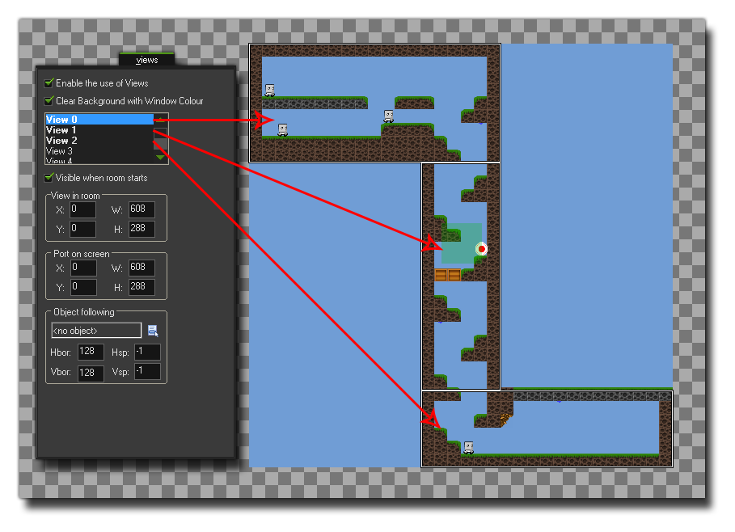

surface_create_ext(name, w, h);
| 参数 | 描述 |
|---|---|
| name | 所链接的画布元素名称。 |
| w | 要创建的表面层的宽度。 |
| h | 要创建的表面层的高度。 |
返回：实数
注：此功能仅适用于与HTML5模块一起使用！
这个函数允许你为已经存在网页上的canvas元素附著一个表面图层，意味着可以有效的分割游戏的部分页面，绘制到页面内的不同地方。为此，你必须准确的定义*.html游戏页面的画布元素，使用正确的大小和名称，以符合想要创建的表面。所以，你会有一个“主”画布，然后是辅助的表面层canvas元素，通过这个函数指定到正确的表面层。下面的图片是一个例子展示了怎么设置一个三个画布元素的页面： 页面布局可能会比较棘手， 特别是你希望所有的元素都可以正确的排列，
一旦创建布局这个艰巨的任务已经完成，你可以在 全局游戏设定的
HTML5 标签中 将这个 html 文件作为游戏的默认页面。接下来应该做的是设置房间和视野，因为每个表面层都需要关联一个特定的视野以捕捉游戏画面 (查阅视野变量
view_surface_id[0...7]).下面的图片展示的是如何为上面的画布例子设置游戏房间的参数： 
最后，你可以再使用这个函数来创建表面图层，名称和画布元素使用的相同，大小符合同一个画布的尺寸。这个函数将返回表面的索引名称，并储存在一个变量上，方便将来函数调用。当这个表面首次被创建的时候，它可能会包含“噪音”，因为基本上它只是一个为特别的目的而搁置的内存区域（这个内存可能仍然包含信息），
所以在使用前需要用 draw_clear_alpha这个函数清理这个表面。
s1 = surface_create_ext("surface1", 192, 550);
s2 = surface_create_ext("surface2", 608, 186);
view_surface_id[1] = s1;
view_surface_id[2] = s2;
上述代码创建了两个不同大小的表面，并给他们每个都指定了不同的画布元素，然后为了在房间里捕捉正确的部分，给这两个表面层指定了两个视野。
| Converted from CHM to HTML with chm2web Pro 2.85 (unicode) |